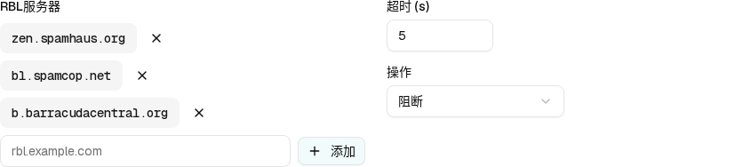
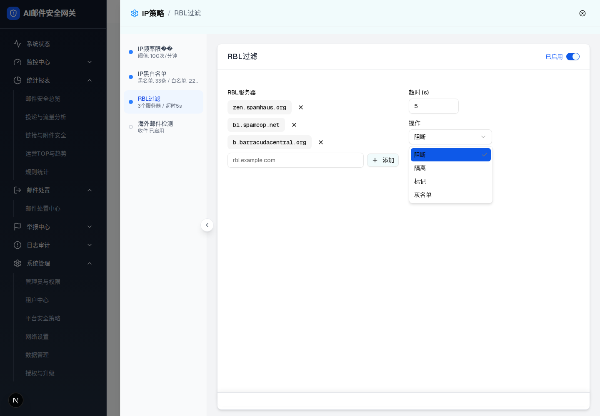

阻断✓
隔离✓
标记✓
灰名单✓
| 所属组件 | 2.2 RBL 配置面板 renderRblConfig() |
| 主文件 | filter-rules-pipeline-rbl-filter/index.html |
| demo 源 | connection-layer-page.tsx L1019–1112（面板）；strategy-pipeline-page.tsx L2007–2047（抽屉） |
| 触发路径 | 层级 0 策略卡片 →「配置」按钮 → setFullPageDrawerPolicy("rbl") → Dialog 打开，内部挂载 <ConnectionLayerPage embedded initialPolicy="rbl" /> |
| DOM 节点数 | 抽屉根 103 ｜ RBL 配置面板 38（实测） |
/filter-rules/pipeline → 阶段1 泳道 → RBL过滤卡片 →「配置」

div.grid.grid-cols-2.gap-6，action = 阻断，无灰名单入口）
阻断 为 data-state="checked"（蓝底白字 + 右侧对勾）↓ 与 demo 行为一致的可操作预览：删除服务器（×）、输入并「添加」（回车亦可）、改超时、展开「操作」下拉切换动作。选中「灰名单」会条件渲染入口卡片（即进入层级 2）。
灰名单配置
延迟接收：600秒内阻断首次请求
rblAction === "greylist" 条件渲染入口卡片）。
详见 层级 2 · 灰名单入口 →预览如实复刻 demo 的缺陷行为：添加空串或重复服务器时静默无反应（无 Toast、无红字）；服务器可删到 0 条且无确认弹窗；超时输入无 min/max。见主文件 §9 D3 / D4。
| # | 元素 | 类型 | 文案 / 占位符 | 默认值 | 样式（实测） | 交互 / 校验 | i18n key |
|---|---|---|---|---|---|---|---|
| 1 | 抽屉面包屑 | h2 + span | 「IP策略 / RBL过滤」 | — | — | 右上角 X 关闭抽屉 | connection.ipPolicy / connection.rblFilter |
| 2 | 模块启用开关 | Switch [role=switch] | 「已启用」 | aria-checked="true" | — | 关闭后 spec 要求整体灰度（demo 未验证） | common.enabled |
| 3 | 面板根 | div | — | — | grid-cols-2 gap-6；1920px 下每栏 602.5px | 无断点降级（D7） | — |
| 4 | 左栏 Label | label | 「RBL服务器」 | — | 14px / 500 | 无 | connection.rblServers |
| 5 | 服务器 Badge | span（Badge secondary） | zen.spamhaus.org / bl.spamcop.net / b.barracudacentral.org | 3 条（来自 createDefaultRblConfig()） | 34px 高，font-mono 14px/500，bg lab(96.52 0 0)，radius 8px，padding 6px 12px | 无 Tooltip（spec 要求逐个说明 → D9） | — |
| 6 | 删除按钮 | button ghost + lucide-x(12×12) | — | — | 28×28（h-7 w-7） | click → 设置 deletingRblServer → 二次确认；确认后移除、标记未保存并 Toast（L6） | 确认文案为 zh/th/en 内联文案 |
| 7 | 新服务器输入框 | input[text] | 占位符 rbl.example.com | 空 | 高 36px，radius 8px，flex:1；错误时 destructive 红框 | Enter 或添加按钮 → 必填 / DNSBL 域名 / 去重校验；aria-invalid 同步（L5） | Toast 为 zh/th/en 内联文案 |
| 8 | 添加按钮 | button outline + lucide-plus(16×16) | 「添加」 | — | 高 32px，radius 8px，bg lab(97.77 -3.05 -1.63) | 空值、格式错误、重复分别拦截并 Toast；成功后小写化追加、清空输入、标记未保存 | common.add |
| 9 | 超时输入框 | input[number] | Label「超时 (s)」 | 5 | 宽 120px（max-w-[120px]），高 36px | min=1 max=30；onBlur 空/NaN→5，越界→1或30，并显示三语错误 Toast | connection.timeout |
| 10 | 操作下拉触发器 | button [role=combobox] + lucide-chevron-down | Label「操作」；显示当前动作 | 阻断（block） | 宽 200px（w-[200px]），高 36px | click → 展开 Portal 浮层 | common.action |
| 11 | 下拉选项 ×4 | [role=option] | 阻断 / 隔离 / 标记 / 灰名单 | 阻断 data-state="checked" | 选中项：蓝底 lab(41.44 24.55 -79.19) 白字 + 右侧对勾 | 选中「灰名单」→ 条件渲染入口卡（→ 层级 2） | common.block / quarantine / mark / greylist |
| 12 | 灰名单入口卡 | div（条件渲染） | — | 本层不渲染 | — | 仅当 rblAction === "greylist" | — |
形态/角色差异：[Base] 上述元素对所有有效角色一致；[Overlay] 云-多 / AI-多 / 传统-多的租户管理员因阶段1整体隐藏，不渲染本表任何控件。当前没有只读控件态。
[data-spec='rbl-panel']，action = block）| 比对项 | demo 实际 DOM | 预览 HTML | 一致 |
|---|---|---|---|
| 根节点 | div.grid.grid-cols-2.gap-6 | div.dp-panel（display:grid，2 等宽列，gap 24px） | ✅ |
| 节点总数 | 38 | 38（含 4 个 svg 各自的 path 子节点） | ✅ |
| 直接子节点数 | 2（div.space-y-3 左栏 / div.space-y-4 右栏） | 2 | ✅ |
| 服务器行数 | 3 × div.flex.items-center.gap-2 | 3（JS 按数组渲染） | ✅ |
| Badge 文案 | "zen.spamhaus.org" / "bl.spamcop.net" / "b.barracudacentral.org" | 逐字一致，等宽字体 | ✅ |
| 删除按钮图标 | svg.lucide-x，2 个 path | 同一 lucide-x path 数据 | ✅ |
| 输入框 placeholder | placeholder="rbl.example.com"，value="" | 同 | ✅ |
| 添加按钮 | "添加" + svg.lucide-plus（2 path） | 同 | ✅ |
| 超时输入 | input[type=number]，value="5"，无 min / max 属性 | value="5"，同样不加 min/max（如实复刻） | ✅ |
| 操作触发器属性 | role="combobox" aria-expanded="false" data-state="closed" type="button" | 同（展开时切为 aria-expanded="true" / data-state="open"） | ✅ |
| 触发器文案 | span "阻断" + svg.lucide-chevron-down（opacity:.5） | 同 | ✅ |
| 下拉选项 | Portal 渲染到 body（不在面板子树内）；4 项，data-state 分别 checked/unchecked×3 | 预览内联在 .dp-select 中（绝对定位），data-state 语义一致 | ⚠ 结构位置差异（Radix Portal，见下） |
| 灰名单入口卡 | 未渲染（rblAction === "block"，条件为假） | 未渲染（.dp-gl-wrap 无 .on） | ✅ |
| 切到 greylist 后节点数 | 44（+6：div.pt-1 包裹 + 入口卡 5 节点） | +6，同增量 | ✅ |
差异说明（已知且可接受）：demo 的 Radix SelectContent 通过 Portal 渲染到 document.body，因此不计入面板的 38 节点；提取面板 outerHTML 时下拉内容天然缺席。选项的文案与 data-state 由独立一次 page.evaluate 抓取 [role=option] 得到：[{"text":"阻断","state":"checked"},{"text":"隔离","state":"unchecked"},{"text":"标记","state":"unchecked"},{"text":"灰名单","state":"unchecked"}]。预览为了可操作性把浮层内联在触发器旁，属刻意的结构简化，视觉与状态语义一致。